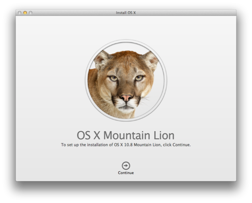

Apple bir sürpriz yaptı ve iÅŸletim sistemi sürüm güncelleme süresini 2 yıldan bir yıla indirdi. Geçen yıl Temmuz ayında çıkan Lion’dan sonra bu yıl 25 Temmuz’da Mountain Lion kullanıma sunuldu.
Apple Mountain Lion’ın 200’den fazla yeni özellik ile geldiÄŸini söylüyor. Pek çoÄŸu güünlük kullanımda karşımıza çıkmayacak özellikler olsa da iOS cihazlarla iCloud sayesinde anında senkronizasyon saÄŸlayan Notes, Reminders gibi uygulamalar, Messages, gerçekten mükemmel bir hıza eriÅŸmiÅŸ olan Safari, açılma süresi ile beni ÅŸaşırtan iTunes, Twitter entegrasyonu (Sonbaharda Facebook ile entegrasyon da saÄŸlanacak) ve bildirimler en önemli özellikler arasında görünüyor.
Bütün bunların yanında iÅŸletim sisteminin alışılmış kullanım kolaylığı ile birlikte düşünüldüğünde, OS X Microsoft’un bir türlü yerleÅŸtiremedeiÄŸi UX ve UI özelliklerinden rahatlıkla yararlanarak, kullanıcıların ve içinde bulunulan yılların taleplerine göre eklentiler yaparak kolaylıkla geliÅŸiyor.
UX ve UI özelliklerini bir türlü yerleÅŸtiremeyen Microsoft ise Windows 8’de Metro arabirimine büyük umutlar baÄŸlamış durumda. Metro arabiriminin yeniliÄŸi ve eski kullanıcılar için karmaşıklığı düşünüldüğünde, Apple’ın gelecek yıllarda kiÅŸisel bilgisayar alanında liderliÄŸi rahatlıkla ele geçireceÄŸi kolaylıkla anlaşılıyor.